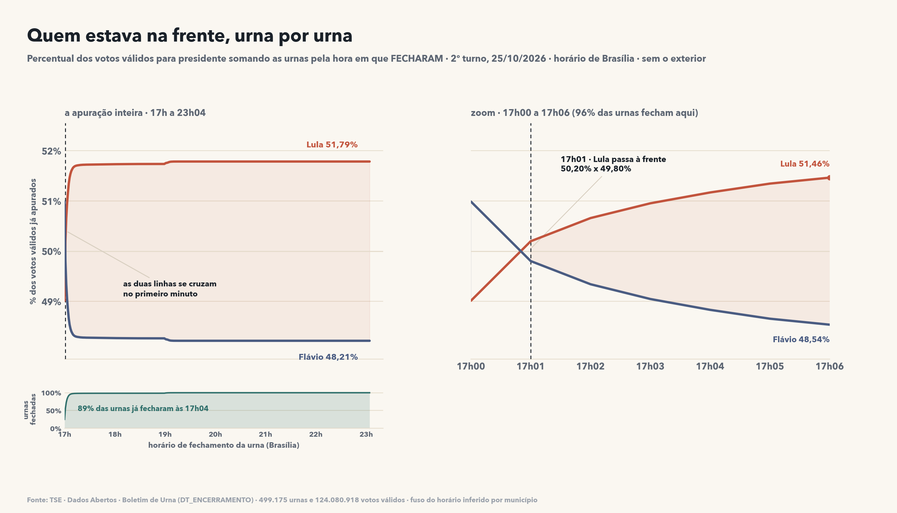

Quem estava na frente, urna por urna
À esquerda, a apuração inteira: as urnas entram na conta pelo horário de fechamento, das 17h às 23:04. À direita, o zoom dos primeiros seis minutos, onde 96% das urnas fecham. No primeiro minuto Flávio liderava com 50,99% (as urnas que fecham mais rápido são as menores, do Sul e do Sudeste); às 17h01 Lula passou à frente com 50,20% e a partir dali a diferença só cresceu, até 51,79% × 48,21%. Abaixo, o ritmo: 89% das urnas já tinham fechado às 17h04.
As urnas por horário de fechamento
Cada linha é um grupo de urnas que fechou naquele intervalo, com os votos que estavam dentro. As linhas destacadas são as que registraram voto depois das 17h05 — 57 mil urnas, 12% dos votos.
| Fechou | Urnas | % das urnas | Votos válidos | Lula | Saldo Lula |
|---|---|---|---|---|---|
| antes das 17h | 3 | 0,0% | 557 | 82,9% | +367 |
| 17:00:00–17:00:29 | 17.758 | 3,6% | 4.395.784 | 46,5% | −310.430 |
| 17:00:30–17:00:59 | 107.876 | 21,7% | 26.216.036 | 49,4% | −295.240 |
| 17:01–17:04 | 314.851 | 63,2% | 78.115.072 | 52,0% | +3.145.982 |
| 17:05–17:14 | 48.343 | 9,7% | 12.480.005 | 56,3% | +1.574.539 |
| 17:15–17:29 | 1.482 | 0,3% | 378.559 | 58,2% | +62.361 |
| 17:30–17:59 | 526 | 0,1% | 135.214 | 58,8% | +23.696 |
| 18:00–18:59 | 731 | 0,1% | 201.266 | 54,5% | +18.174 |
| 19:00 ou depois | 6.327 | 1,3% | 1.788.129 | 55,1% | +182.085 |
O atraso da urna e o atraso da transmissão
São duas coisas diferentes: a urna fechar tarde (teve fila, registrou voto depois das 17h) e o arquivo chegar tarde ao TSE (transmissão). Cruzando as duas, dá para responder quantas das urnas que chegaram atrasadas para a totalização realmente votaram depois do horário.
| Chegou ao TSE | Fechou a urna | Urnas | Votos válidos | Lula | Saldo Lula |
|---|---|---|---|---|---|
| até 20h23 206.595 urnas |
no horário (até 17h05) | 190.821 | 47.286.462 | 50,5% | +468.960 |
| depois das 17h | 15.774 | 4.013.005 | 56,3% | +504.343 | |
| depois das 20h23 291.302 urnas |
no horário (até 17h05) | 249.667 | 61.440.987 | 51,7% | +2.071.719 |
| depois das 17h | 41.635 | 10.970.168 | 56,2% | +1.356.512 |
Das 291.302 urnas que chegaram depois das 20h23 — o bloco que decidiu a eleição —, 41.635 (14,3%) fecharam depois das 17h05. No bloco que chegou mais cedo, essa proporção é de 7,6%. Ou seja: urna que fecha com fila também tende a demorar mais para transmitir.
Como os números foram feitos
- Fonte: dataset "Resultados — 2026 — Boletim de Urna", 28 arquivos
(
bweb_2t_UF_*.zip, um por estado mais o exterior), ~1 GB de CSV. - Cada linha do BU é um candidato em uma urna. Dela saem
DT_ENCERRAMENTO(fechamento),DT_BU_RECEBIDO(chegada ao TSE) e os votos. - Os horários são locais; converti para Brasília inferindo o fuso de cada município pelo horário legal de fechamento (15h local = UTC-5, 16h = UTC-4, 17h = UTC-3). Amazonas tem os dois fusos.
- Os totais conferem com a votação por seção: 123.710.622 votos válidos, os mesmos 64.256.232 de Lula e 59.826.041 de Flávio (o exterior fica de fora do corte de horário).
- O que este dado não diz: quantos votos individuais foram digitados depois das 17h. A urna registra o fechamento da seção, não o horário de cada voto. Os 14.983.173 votos acima são um teto — vêm de urnas que estavam abertas depois das 17h05.
urnas.py → dados/urnas_fechamento_2026.parquet → graficos/14_urnas_fechamento.png